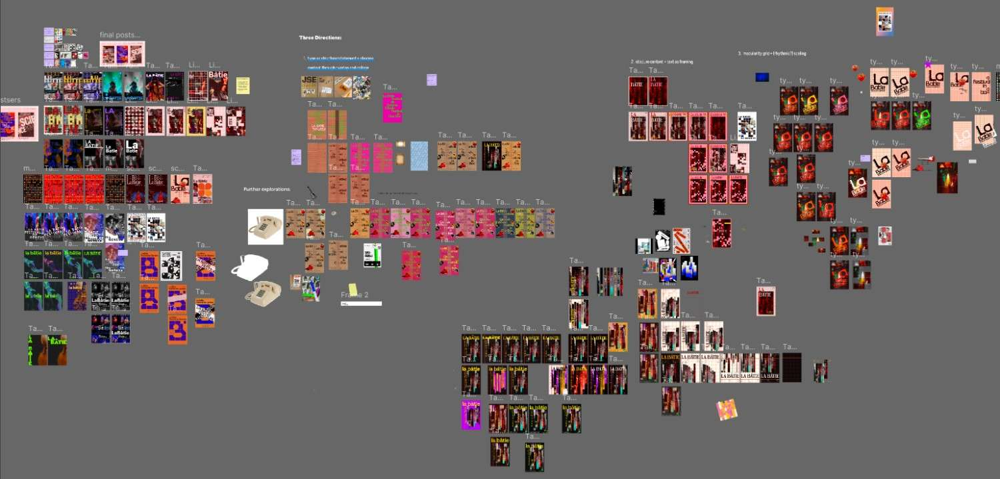
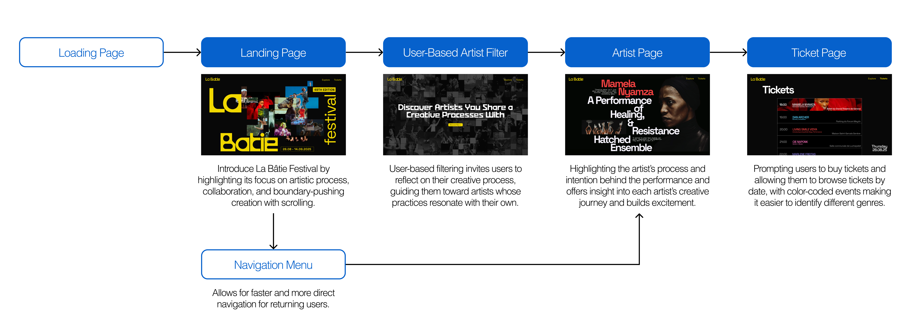

La Bâtie-Festival de Genève Microsite
Showcasing La Bâtie Festival and connecting their artists to their audience through emotional and creative journeys.
Project Context
This was an academic project, for an upper level course User Experience Design (IAT 438) at Simon Fraser University. The goal was to create a cohesive visual identity for the client implemented through graphic assets and a microsite.
Deliverables
Graphic assets and a prototyped microsite.
My Contribution
- Created animations and user interactions on final prototype.
- Developed site's content strategy and brainstormed visual strategy.
- Produced key visual assets used in developing art directions.
Duration
4 Weeks (May-June 2025)
Role
Visual Design
Prototyping
Content Strategy
Team
Areeba Ali, Sarrah Anuva, Yasamine Ketabchi, Yumi Kawagoe
Introduction
Our team was tasked with developing a unique visual identity for our client that was guided by an art direction developed from qualities and principles sourced from class resources and a precedent designer. Additionally, the team applied the resulting visual identity to physical assets and a microsite for our client to enhance the festival experience.
Our Client
La Bâtie-Festival de Genève is an annual 18-day long event that showcases music, dance, theater, and performance across 50+ events in 40 venues spanning Geneva, France, and Vaud. The festival brings together bold artistic creations from national and international talents.

Video Clip from: https://vimeo.com/1010566289
To enhance the festival's reach through our deliverables it was very important to understand the audience and what drew them to the festival. Additonally, we intensively researched the client and their website to understand their potential needs and where their current design was falling short.
Problem Statement
How might we foster a deeper connection between potential attendees and artists to prompt ticket sales and emphasize the celebration of arts at La Bâtie-Festival?
Design Process
In addition to throughly researching our client and their audience, we began analyzing our class resources (Graphic Design: The New Basics - Second Edition, Revised and Expanded by Ellen Lupton) and a precedent designer (Experimental Jetset) to find design qualities and principles to use as a launch point for our visual designs. Through iterative processes of sorting through readings, image grouping and sorting through precendent works, we landed on the following five qualities and principles:
From our five qualities and principles, we developed three different art directions and applied them to a poster and physical assets. We took on an iterative process of designing the three different art directions, by creating multiple different directions and slightly tweaking them and adding to them in each iteration.

In this portion of the project I assisted in visual design, image curation and treatment application and asset mockup creation and contributed to adding elements such utilizing grids to distort elements and incorporating elements' physical material and texture to our designs.
One obstacle we faced at this point of the project was translating our art direction, physical assets and posters onto an online microsite. Additionally, we needed to consider how successful our microsite would be when presented to the festival's target audience.
Microsite Goal
Building 'hype' around the festival and encouraging visitors and fans of the artists to feel more connected and empathize with them on a personal level, by allowing for further insight on the artists' stories and creative processes.
Final Microsite
Transitioning to our final microsite in addition to following our art direction, focused on providing curated interactive content to hold users' attention and intrigue.

Microsite Walkthrough
Final Microsite
A pre-festival microsite that allows visitors to build personal conntections and feelings towards featured artists and their art through dynamic content and creative interactions, encouraging them to buy tickets to attend the festival and see the works and artists in-person.
Microsite Highlights
Loading Page
As the site loads, users see an animation of the landing page coming together and showcasing hero images of the festival's artists of that year to build anticipation and excitement. I created the animation prototype to be a seamless transition to the landing page.
User-Based Filter
One unique element of our microsite was the use of a filter that catered to the user's specific interest and artisitic views, and selected an artist who's journey and art resembled the user's to further engage them and get a personalized look into the festival.
I chose to implement loading animations that symbolized the building/unpacking of the user's artistic mind as they are filtering through the artists at the festival, such as questions transitioning onscreen letter-by-letter to symbolize the process of creating, and images of the artists appearing in the background going from cluttered and chaotic to organized and cohesive as the questions progress symbolizing the before and after.
Interactive Elements and Scrolling
To further engage the user to actively explore the webstie, interactive text and elements utilizing scrolling, mouse movement and hover states were used to make the space more dynamic and interesting to the user, encouraging them to explore.
Reflection
This project helped me to greatly improve my ability to prototype an functioning microsite and research precedent designs and apply key principle and elements from them to my work and still making it my own. Additionally, I was able to practice my ability to utilize typography, fitting interactions and visual design to further enhance users' experiences.
Looking back on this project I would have liked to further explore potential interactions to help enhance the UX and playing into the 'gamified' aspects of the site, as well as bringing more emphasis to the purchasing of the tickets as I felt like it isn't prioritized enough for users to prompt them to buy tickets. Ultimately, this project helped me think outside of the box in terms of visual design and user interactions and to think creatively to create a unique user experience.